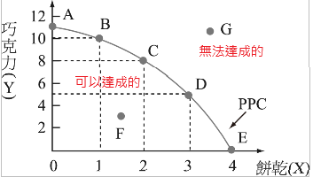
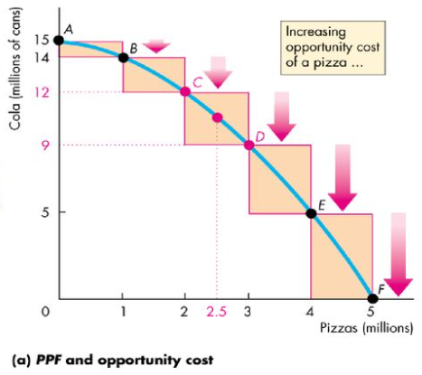
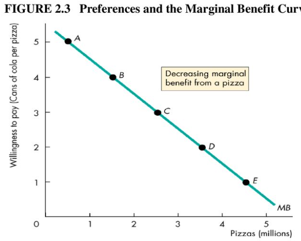
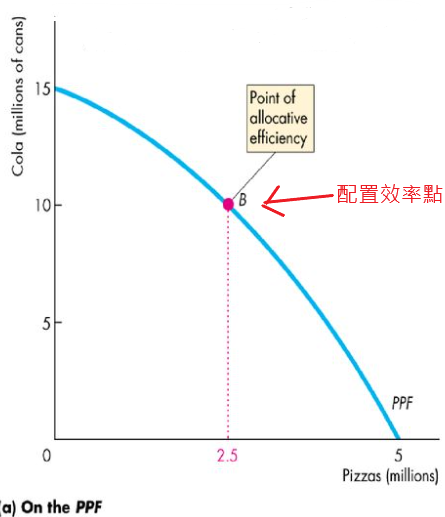
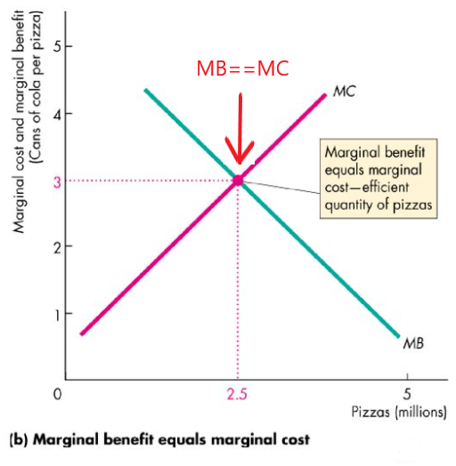
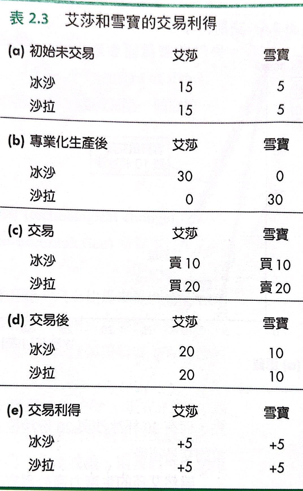
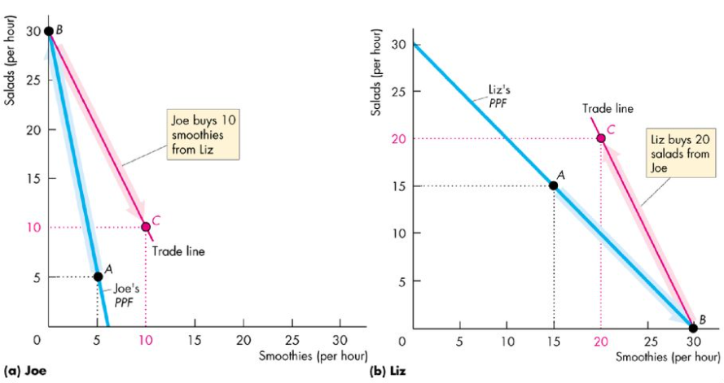
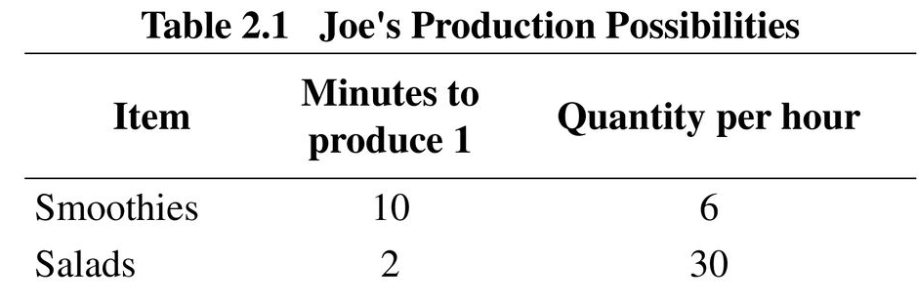
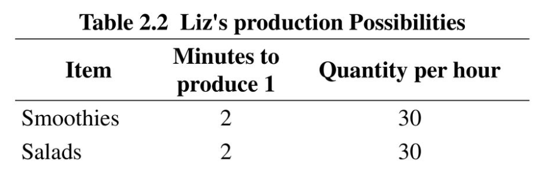
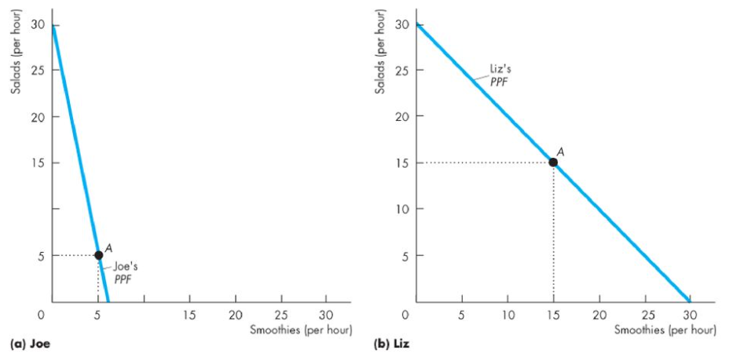

陳杰龍的筆記網站
陳杰龍的筆記網站 主頁
主頁 歸檔
歸檔 分類
分類 其他
其他 關於我
關於我 2.經濟問題
2.經濟問題
筆記說明
此筆記用途在於國立屏東大學資訊管理系大三上經濟學重點整理
並非所有人都適用
如果有侵犯到版權的問題在聯繫我，再聯絡我，我在移除
並非所有人都適用
如果有侵犯到版權的問題在聯繫我，再聯絡我，我在移除
生產可能與機會成本
- 生產可能曲線(production possibilities frontier, PPE)
- PPE說明了稀少性
 - 生產效率
- 線內 => 無效益
- 線上 => 剛好
- 線外 => 無法達成
- 沿著PPF的取捨
- 所有取捨都涉及成本--機會成本
- PPE說明了稀少性
- 機會成本
- 機會成本是一個比率
某一產品減少的數量除以另一產品所增加的數量 - 機會成本遞增
- 機會成本是一個比率
有效率使用資源
- PPF與邊際成本(MC)

- 生產的邊際成本：增產一單位增加的成本
- 增產一單位增加的成本是以生產這一單位商品的機會成本來衡量
- 偏好與邊際效益(MB)
 - 配置效率
 
交易利得
- 絕對利益與比較利益
- 絕對利益
- 一種商品的生產力高於其他人，則他對該商品的生產具有絕對利益
- 比較利益
- 一種商品的機會成本低於其他人，則他對該商品的生產具有比較利益
- Joe生產Salads具有比較利益
Liz生產Smoothies具有比較利益

- 專業化生產自己具有比較利益的產品，然後透過市場交易，交換各自生產的產品，而產生的利得 
 
 - 絕對利益
經濟成長
- 經濟成長
- 經濟成長推動生產可能曲線外移，平均每人產量增加
- 經濟成長的主要來源
- 技術變動
- 技術的改變，是指新產品的開發與更好的生產方式
- 資本累積
- 實質資本的累積
- 人力資本的累積
- 技術變動
- 經濟成長的成本
- 為了促進經濟的成長， 我們需投入更多的資源研發新技術與生產更多資本財(capital goods)，因而需付出目前消費財(consumption goods)產量減少的代價